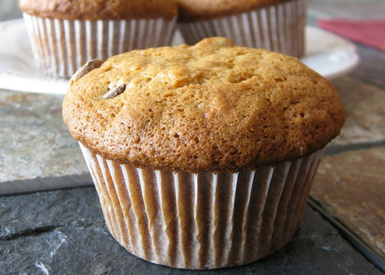

Banana Muffins

This is a quick and easy recipe for delicious banana muffins! You can even bake these with your kids as a fun activity to do together. Bake these for a wonderful desert, quick breakfast as you run out the door, or for a party. Either way, you'll definitely love these muffins and will probably find yourself quickly baking them again.
Ingredients
- 1 ½ cups all-purpose flour
- 1 teaspoon baking powder
- 1 teaspoon baking soda
- ½ teaspoon salt
- 3 large bananas, mashed
- ¾ cup white sugar
- 1 egg
- ⅓ cup butter, melted
Steps
- Preheat oven to 350 degrees F (175 degrees C). Coat muffin pans with non-stick spray, or use paper liners. Sift together the flour, baking powder, baking soda, and salt; set aside.
- Combine bananas, sugar, egg, and melted butter in a large bowl. Fold in flour mixture, and mix until smooth. Scoop into muffin pans.
- Bake in preheated oven. Bake mini muffins for 10 to 15 minutes, and large muffins for 25 to 30 minutes. Muffins will spring back when lightly tapped.